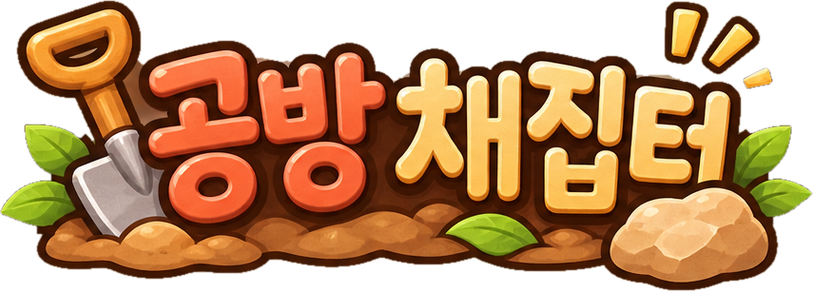
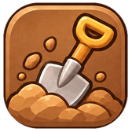
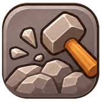

30초 동안 최대한 많이 캐 오세요.
조각
5개
가 모이면 재료
1개
가 돼요.

흙 파기
공터를 누르면 맨 위 흙이 한 겹씩 벗겨져요. 깊을수록 좋은 흙(★)이 묻혀 있고, 다 드러나야 캐져요. 2초 안에 연달아 캐면 콤보! 큰 덩어리는 3개로 쳐요.

돌 부수기
손가락으로 돌을 쓸고 지나가면 부서지며 유약 원료가 나와요. 큰 돌일수록 많이 나와요. 반짝이는 황금 돌은 금방 사라지니 얼른 두 번 쓸어요 — 진사 확정!
채집 끝!
처음으로
한 번 더